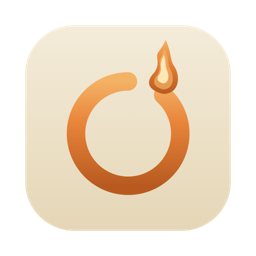

~/proyecto
ocote

Ocote
La terminal determinista para América Latina
~
▶
Documentos
▶
proyecto
▶
src
⚙
..
src
RS
main.rs
RS
lib.rs
tests
RS
mod.rs
zsh
×
bash
×
localhost: server
×
+
pill
~/proyecto/src
main
14:32
◖
exit 0
◗
❯
git clone
Clonar un repositorio
contexto
git commit
Guardar cambios
git checkout
Cambiar de rama
git branch
Listar ramas
git clone
comando
Copia un repositorio Git remoto a tu máquina local. Esencial para descargar proyectos y contribuir.
Banderas
--depth
Clonado superficial
--branch
Rama específica
Ejemplo:
git clone https://github.com/usuario/proyecto.git
Presiona Esc para cerrar
Clonando en
proyecto/
...
remote: Enumerando objetos: 152, listo.
✓ 152 objetos recibidos
TEMAS
O
D
N
G
T
M